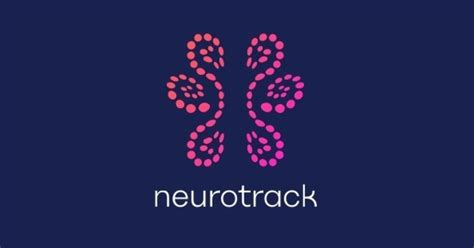
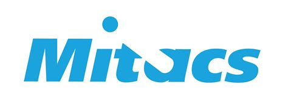
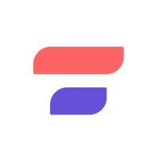
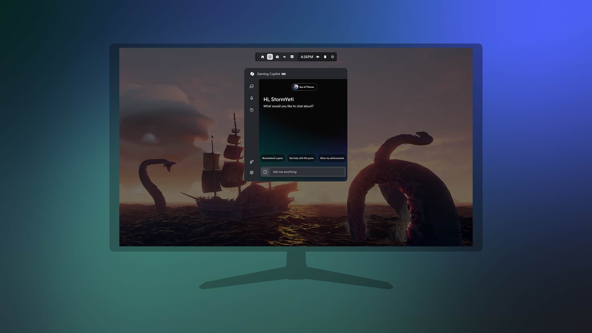
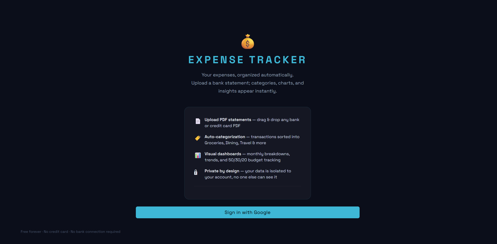
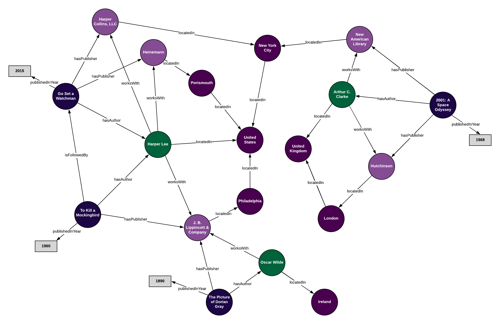
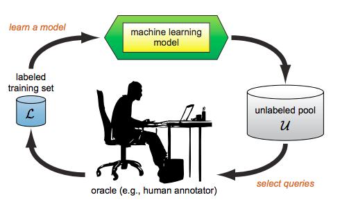
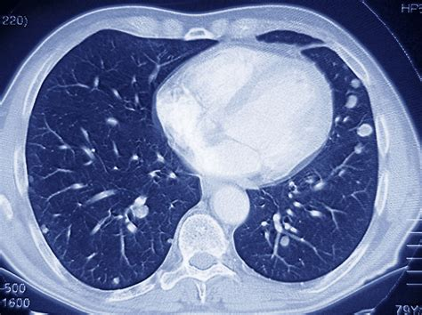
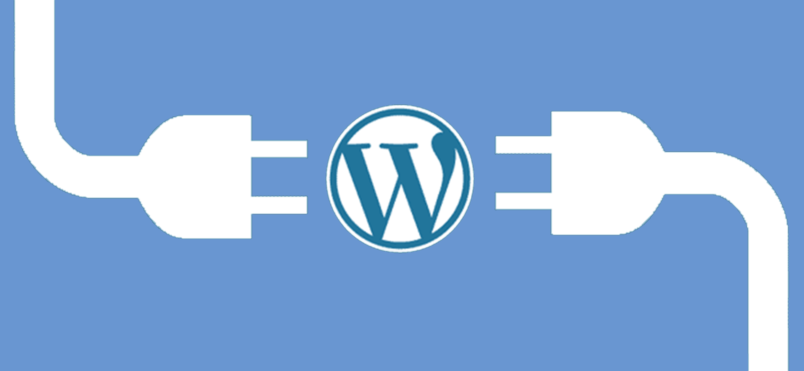

Software Engineer @ Microsoft
I'm a software engineer who gets genuinely excited about building technology that matters. Right now, I'm at Xbox working across a variety of cool projects; one such example being an artificial intelligence assistant for gaming that over 70% of users tried within a day of launch (still pinching myself about that one). Before gaming, I spent time making online spaces safer through intelligent moderation systems. Prior to that, I helped build cognitive health tools that can detect early signs of Alzheimer's up to 3 years before traditional methods.
What drives me? The intersection of complex technical challenges and real human impact. No seriously, whether it's reducing a gamer's frustration, protecting someone from online harm, or giving a family more time with a loved one, that's the work that gets me out of bed. When I'm not coding, you'll probably find me lost in a book (yes, I'm that person who insists books are always better than movies).
Xbox Personalization
Xbox Trust and Safety

May 2021 - July 2022Neurotrack Technologies Inc.

Mar 2021 - May 2021Ethically Aligned AI

Dec 2020 - May 2021Famwork
University of Alberta
Makesto Infotech Private Limited
L&T Technology Services
University of Alberta, Edmonton
College of Engineering, Guindy, Anna University

Built the ultimate gaming sidekick for Xbox, an AI companion that knows what you're playing and understands your Xbox activity to provide personalized help. I developed features including Voice Mode for hands-free assistance during gameplay, screenshot-based context awareness for real-time support, and proactive coaching. Drove adoption by over 70% of users within a day of launch.
Built this gameplay capture feature for the ROG Xbox Ally X, enabling players to automatically clip their standout gaming moments, like epic boss battles and victories, into short replay clips to share with friends. I engineered it on top of Game Assist to capture clips in the background during play and assemble a highlight reel at the end of each session, requiring no additional downloads and never interrupting gameplay. Shipped to Xbox Insiders as Game Highlights (Preview) in the Xbox PC app.

Built a full-stack personal finance app that turns messy bank and credit-card statements into clear spending insights. I wrote custom PDF parsers that handle multiple bank formats (Amex, Scotiabank, Wealthsimple, Rogers Bank), an auto-categorization engine driven by layered user and global keyword rules, and interactive dashboards for monthly and category-level spending trends. Built with Python and Streamlit, backed by Supabase (Postgres) with user authentication and per-user data isolation.
A machine learning/deep learning project with a web interface used to predict the open price of a particular stock on a given day. Dataset created by scraping Yahoo finance. Created using Python.
A chrome extension for accessible computing. Improved user accessibility by 65%. Created using Python and tested on a control population of 30 people.

A Natural Language Processing based project that focuses on relation extraction between a pair of entities in Knowledge Bases using a clustering algorithm. Created using Python and tested on KnowledgeNet relations.
A Visual Aid storytelling system used in story telling sessions for visually challenged children. Consisted of an interactive computer and sensor system and when scenes from stories were fed to the computer, the sensors rose to depict the scene.

An Interactive Machine Learning based algorithm that helps produce automated systems that provide highly accurate predictions, with a low number of training instances. Improved over previous systems by 10%.
A Machine Learning based project that detects the early onset of depression using the RSDD dataset and processed using Natural Language Processing. Achieved an accuracy of 99%.
An Internet of Things based system that assesses geriatric frailty using four smart devices which can be monitored from afar. Based on a smart condo environment and developed for Withings.

A Machine Learning based project which focused on detecting and predicting lung cancer by automatically analyzing CT scans. Created using Python.

A WordPress plugin to aid the upload of 3D models in the GLTF format, using the URL and file name.
Memotion (Meme + Emotion) Analysis is the task of analyzing sentiments from memes, typically posted in various social platforms, and classifying them into positive and negative sentiments. This system represents an approach to extract and analyze embedded texts of a meme from a released data set of a SemEval-2020 task.